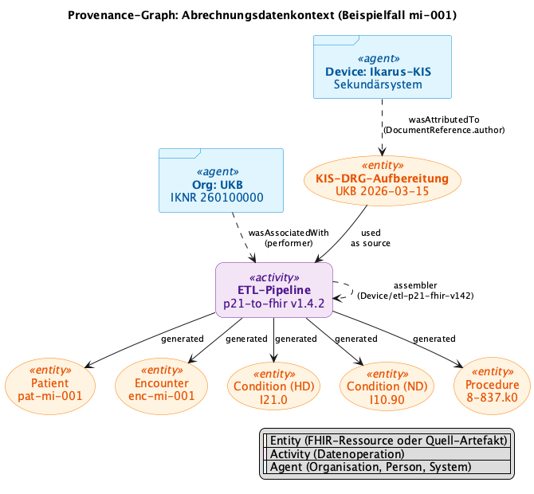
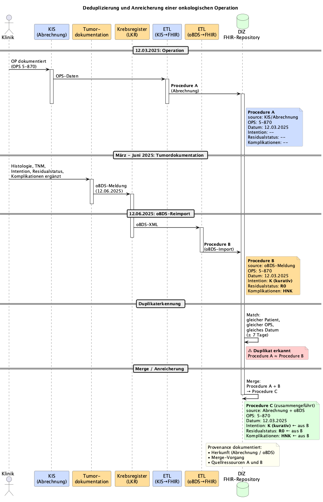

http://mii.de/CodeSystem/dq-rule-successful
http://purl.bioontology.org/ontology/SNOMEDCT/
http://trial.info/dq
https://www.medizininformatik-initiative.de/fhir/ext/modul-metadaten-provenance/CodeSystem/mii-cs-datenquellsystem
https://www.medizininformatik-initiative.de/fhir/ext/modul-metadaten-provenance/CodeSystem/mii-cs-provenance-prozedur-herkunft
This fragment is not visible to the reader
This publication includes IP covered under the following statements.
| Type | Reference | Content |
|---|---|---|
| web | snomed.info | 373808002 |
| web | snomed.info | 363676003 |
| web | snomed.info | 399707004 |
| web | www.medizininformatik-initiative.de |
IG © 2025+ Medizininformatik Initiative
. Package mii-ig-metadaten-provenance-de-v2026#0.2.0-rc.1 based on FHIR 4.0.1
. Generated 2026-07-23
Links: Table of Contents | QA Report |
| web | snomed.info | 373808002 |
| web | snomed.info | 363676003 |
| web | snomed.info | 399707004 |
| web | github.com | Die BZKF-Implementierung obds-to-fhir (Christian Gulden, BZKF/Erlangen) nutzt die FHIR Provenance Ressource zur Dokumentation der ETL-Transformation von oBDS-XML-Meldungen zu MII-KDS-konformen FHIR-Ressourcen. Für jede erzeugte Ressource wird eine Provenance-Instanz generiert, die den Transformationsprozess nachvollziehbar macht. |
| web | github.com | Das folgende Beispiel stammt aus dem ProvenanceMapperTest der obds-to-fhir ETL-Strecke: |
| web | github.com | Quelle: bzkf/obds-to-fhir , Christian Gulden (BZKF/Erlangen) |
| web | smilecdr.com | Quellen: Smile CDR: Tags, Profiles, and Security Labels , Oracle FHIR: Tag Retention , Samply Blaze |
| web | docs.oracle.com | Quellen: Smile CDR: Tags, Profiles, and Security Labels , Oracle FHIR: Tag Retention , Samply Blaze |
| web | samply.github.io | Quellen: Smile CDR: Tags, Profiles, and Security Labels , Oracle FHIR: Tag Retention , Samply Blaze |
| web | github.com |
FSH-Quelltext:
mii-exa-abrechnungskontext.fsh
.
|
| web | dataquality.qihs.uni-greifswald.de |
Dieses Beispiel zeigt, wie DQ-Regeln als Meta.tag
an Ressourcen annotiert werden können – basierend auf Vorarbeiten von Matthias Löbe (MII Taskforce Metadaten) und dem DQ-Framework der Universität Greifswald
.
|
| web | dataquality.qihs.uni-greifswald.de | Zusätzlich zu projektspezifischen Regeln steht das DQ-Framework der Universität Greifswald als standardisiertes Klassifikationssystem für Datenqualitätsindikatoren zur Verfügung. Es umfasst 34 Indikatoren in 4 Kategorien: |
| web | github.com | Die Krebsregistermeldung wird mittels einer ETL-Strecke (z.B. obds-to-fhir ) in FHIR-Ressourcen umgewandelt und in das DIZ-Repository integriert. Dabei entstehen mehrere FHIR-Ressourcen aus derselben oBDS-Meldung: |
| web | dataquality.qihs.uni-greifswald.de | Das Datenqualitäts-Framework der Universität Greifswald (COS – Center of Open Science) definiert ein standardisiertes Klassifikationssystem für Datenqualitätsindikatoren. Es bietet eine systematische Kategorisierung von DQ-Problemen, die in klinischen und Forschungsdatensätzen auftreten können. |
| web | dataquality.qihs.uni-greifswald.de | Quelle: Greifswald OBC DQ-Framework , MII Taskforce Metadaten (Matthias Löbe et al.) |
| web | github.com | Anmerkungen und Kritik in Form von 'Issues' im GitHub-Projekt . |
| web | github.com | Hinweis: Der Use-Case-Katalog befindet sich im Aufbau. Die unten aufgeführten Szenarien sind als Entwurf zu verstehen und noch nicht abgestimmt. Beiträge und Rückmeldungen sind willkommen – bitte als Issue im GitHub-Projekt einreichen. |
|
Abrechnungskontext_Prov_Graph.png  |
|
Deduplizierung_Onko_OP.png  |
|
tree-filter.png
|